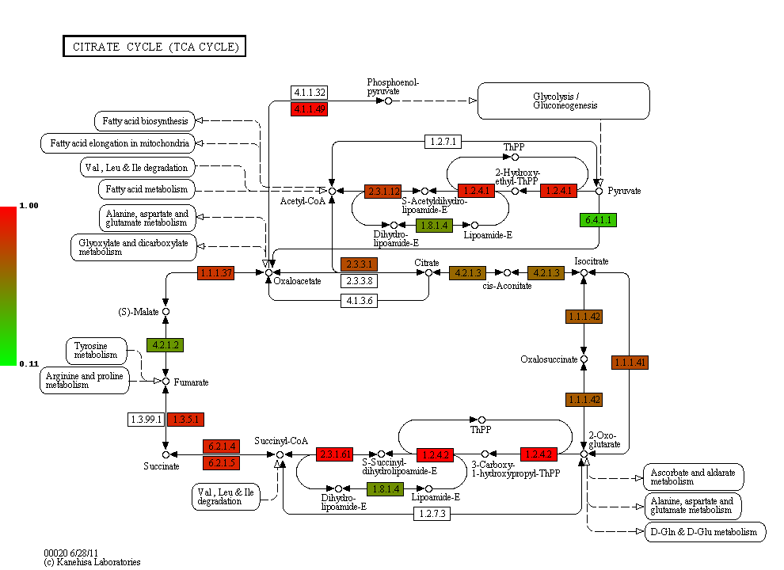
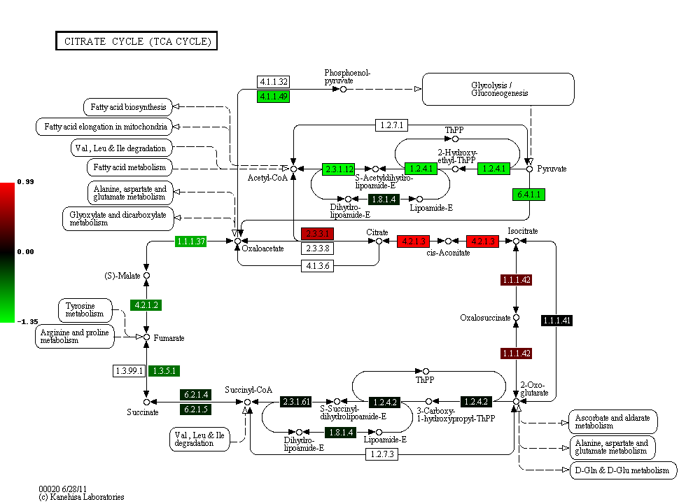

color-KEGG-pathways
color-KEGG-pathways is a command-line utility which interfaces with the KEGG API to produce color-coded figures of pathways. Any enzyme, metabolite or sub-pathway normally visible in a KEGG pathway can be painted with arbitrary color to represent quantitative or qualitative information such as expression level, presence or absence, etc. Here is an example:
Example of color-coded pathway.
Information about which objects to color and how to color them must be provided to color-KEGG-pathways as a .csv-formatted input file with the following syntax:
- the first column must be the KEGG identifier for this pathway (e.g., sce00010 for the Saccharomyces cerevisiae glycolysis pathway)
- the second column must be the KEGG identifier of an object in this pathway (e.g., YBR019C for enzymes 5.1.3.2 and 5.1.3.3)
- the third column must either be a HTML-compatible hex triplet color (e.g., #FFFFFF for white or #0000FF for blue) or a measure. In this later case several options are available for color-KEGG-pathways to calculate the color based on overall maximum and minimum values
For example, the .csv file used to obtain the figure above was:
afm00010,afm:AFUA_5G01030,1.82653195 afm00010,afm:AFUA_3G05740,1.7700902 afm00010,afm:AFUA_3G09290,1.1786362 afm00010,afm:AFUA_3G11070,1.0063019 afm00010,afm:AFUA_5G14810,0.5802401 afm00010,afm:AFUA_5G06240,0.49131745 afm00010,afm:AFUA_2G04870,0.40439728 afm00010,afm:AFUA_8G02560,0.2803983 afm00010,afm:AFUA_4G08600,0.209255325 afm00010,afm:AFUA_3G11900,0.207820625
(note: only the first ten lines are shown here)
More than one pathway can be referred to in the same input file; color-KEGG-pathways will process each pathway and generate individual pictures.
Latest version
The current version of color-KEGG-pathways is VERSION.
Installation
To install color-KEGG-pathways you must go through the following steps:
- ensure a Python interpreter (version 2.6 or 2.7; 3.0 and later are not supported yet) is installed in your system. Please refer to this page if needed.
- ensure the SUDS, PyX and PIL libraries are installed. A quick way to install those is to first install easy_install (see the documentation) then type easy_install suds, easy_install pyx then easy_install pil on the command line.
- go to http://github.com/ajmazurie/Utilities/zipball/master. A file named ajmazurie-Utilities-xxxx.zip will download (xxxx will be replaced by a commit signature code).
- unzip this file.
- ensure the file color-KEGG-pathways/color-KEGG-pathways is in your PATH, either by moving it to a directory already in your PATH or adding this directory to the PATH.
- color-KEGG-pathways should now be accessible from the command line; you can test it by typing color-KEGG-pathways --version
Usage
A list of options can be obtained by using the --help option:
%> color-KEGG-pathways --help Usage: color-KEGG-pathways [options]
Examples
Example 1
Coloring the enzymes of the Saccharomyces cerevisiae citrate/TCA cycle (pathway identifier sce00020) with a rainbow pattern, and the metabolites in red.
Content of example_1.csv:
sce00020,sce:YCR005C,ff0000 sce00020,sce:YNR001C,ff1f00 sce00020,sce:YPR001W,ff3f00 sce00020,sce:YJL200C,ff5f00 sce00020,sce:YLR304C,ff7f00 sce00020,sce:YDL066W,ff9f00 sce00020,sce:YLR174W,ffbf00 sce00020,sce:YNL009W,ffdf00 sce00020,sce:YNL037C,ffff00 sce00020,sce:YOR136W,dfff00 sce00020,sce:YIL125W,bfff00 sce00020,sce:YDR148C,9fff00 sce00020,sce:YFL018C,7fff00 sce00020,sce:YPL017C,5fff00 sce00020,sce:YOR142W,3fff00 sce00020,sce:YGR244C,1fff00 sce00020,sce:YJL045W,00ff00 sce00020,sce:YKL148C,00ff1f sce00020,sce:YLL041C,00ff3f sce00020,sce:YKL141W,00ff5f sce00020,sce:YMR118C,00ff7f sce00020,sce:YDR178W,00ff9f sce00020,sce:YLR164W,00ffbf sce00020,sce:YPL262W,00ffdf sce00020,sce:YDL078C,00ffff sce00020,sce:YKL085W,00dfff sce00020,sce:YOL126C,00bfff sce00020,sce:YBR218C,009fff sce00020,sce:YGL062W,007fff sce00020,sce:YKR097W,005fff sce00020,sce:YER178W,003fff sce00020,sce:YBR221C,001fff sce00020,sce:YNL071W,0000ff sce00020,cpd:C00022,ff0000 sce00020,cpd:C00024,ff0000 sce00020,cpd:C00026,ff0000 sce00020,cpd:C00036,ff0000 sce00020,cpd:C00042,ff0000 sce00020,cpd:C00068,ff0000 sce00020,cpd:C00074,ff0000 sce00020,cpd:C00091,ff0000 sce00020,cpd:C00122,ff0000 sce00020,cpd:C00149,ff0000 sce00020,cpd:C00158,ff0000 sce00020,cpd:C00311,ff0000 sce00020,cpd:C00417,ff0000 sce00020,cpd:C05125,ff0000 sce00020,cpd:C05379,ff0000 sce00020,cpd:C05381,ff0000 sce00020,cpd:C15972,ff0000 sce00020,cpd:C15973,ff0000 sce00020,cpd:C16254,ff0000
Command-line syntax:
color-KEGG-pathways -i example_1.csv
Resulting picture:

Example 2
You will notice that the figure from Example 1 has gray boxes on some elements: namely, some enzymes and all of the connected pathways. This is because by default color-KEGG-pathways will assign a color (which you can change using the --missing-color option) to missing objects; i.e., objects that are part of the pathway but are not listed in the input .csv file.
You can change this behavior by using the --dont-show-missing and --only-show-missing options. The first one will not show missing objects of some type (compound, genes, ortholog or map) while the second will only show missing objects of a given type.
Hence, to create a new version of the figure above with only missing genes being colored in gray you can type:
color-KEGG-pathways -i example_1.csv --only-show-missing genes
Resulting picture:

In this case no missing gene can be found. Note that white rectangles are a way for KEGG to show that the genes corresponding to a given enzyme are not found in this particular species.
Example 3
Let now use another input file, in which genes are not provided with colors but with some measurements, such as expression ratios. By using the --two-color-scale option color-KEGG-pathways will set the color of these genes as an interpolation between a start and an end color (which can be modified using the --start-color and --end-color options, respectively). --two-color-scale must be provided with the measure associated to the start color and the stop color; the min and max placeholders can be used to represent the minimum and maximum value in the input file, respectively.
Content of example_3.csv:
sce00020,sce:YCR005C,0.126282121306 sce00020,sce:YNR001C,0.732643560422 sce00020,sce:YPR001W,0.451466310516 sce00020,sce:YJL200C,0.63541088878 sce00020,sce:YLR304C,0.29984681721 sce00020,sce:YDL066W,0.686157749236 sce00020,sce:YLR174W,0.184382431261 sce00020,sce:YNL009W,0.503979008833 sce00020,sce:YNL037C,0.313627903323 sce00020,sce:YOR136W,0.738991695825 sce00020,sce:YIL125W,0.995497433424 sce00020,sce:YDR148C,0.976824618511 sce00020,sce:YFL018C,0.221671234839 sce00020,sce:YPL017C,0.496774542881 sce00020,sce:YOR142W,0.753411521095 sce00020,sce:YGR244C,0.871886510744 sce00020,sce:YJL045W,0.63206417879 sce00020,sce:YKL148C,0.635856811757 sce00020,sce:YLL041C,0.866004577703 sce00020,sce:YKL141W,0.559150167364 sce00020,sce:YMR118C,0.165359091514 sce00020,sce:YDR178W,0.5630501412 sce00020,sce:YLR164W,0.110842747088 sce00020,sce:YPL262W,0.47728178047 sce00020,sce:YDL078C,0.339389017326 sce00020,sce:YKL085W,0.643389560396 sce00020,sce:YOL126C,0.810766941838 sce00020,sce:YBR218C,0.128383581285 sce00020,sce:YGL062W,0.305526154636 sce00020,sce:YKR097W,0.96793319272 sce00020,sce:YER178W,0.354643109199 sce00020,sce:YBR221C,0.899168181625 sce00020,sce:YNL071W,0.790556669728
Command-line syntax:
color-KEGG-pathways -i example_3.csv --two-color-scale min max --only-show-missing genes
Resulting picture:
In this example the gene with the minimum measure received the color set by --start-color, while the gene with the maximum measure received the color set by --end-color. All the genes in between received a color interpolated between these two colors.
Note that the picture now has a legend on the left, showing the gradient between the start and stop color and the associated measures. You can remove this legend by using the --no-legend option.
Example 4
In this last example we will show how to use a 3-color scale. This is particularly useful to represent expression ratio, which are either positive or negative. In this case using two color gradients make sense: one gradient for all values between a midpoint (typically zero) and the maximum ratio, and another gradient for all values between the midpoint and the minimum ratio.
This can be done using the --three-color-scale option. Similarly to --two-color-scale it must be provided with the values of the start, midpoint and stop colors.
In addition to the --start-color and --end-color options seen above, you can use the --midpoint-color to set the color of the midpoint.
Content of example_4.csv:
Dummy
Command-line syntax:
color-KEGG-pathways -i example_4.csv --three-color-scale min 0 max --only-show-missing genes
Resulting picture:
Note about colors
The use of green for down-regulated and green for up-regulated genes and proteins is a de facto standard in the literature. Those colors, however, are difficult to distinguish for most color-blind people.
As discussed at http://jfly.iam.u-tokyo.ac.jp/color/ the following replacements are better options:
- instead of green (0 255 0) and red (255 0 0) you should prefer bluish green (0 158 115) and orange (230 159 0)
- even better, you should prefer sky blue (86 180 233) and yellow (240 228 66); those have a higher contrast than the previous choice